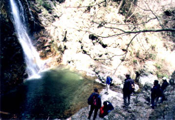
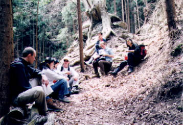
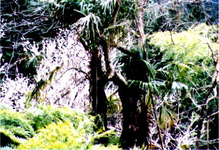
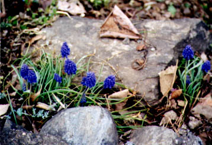
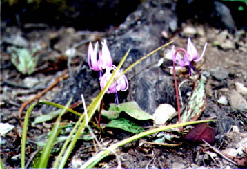

Photos by Iulia Klotz

Our first stop, a waterfall that is apparently supposed to
have more water. A nearby sign warned us: "Do not ease
the nature".

A rest on the way up.

Only in Japan: cherry blossoms and palmtrees on a mountain.

Some flowers on the way down.

More flowers.